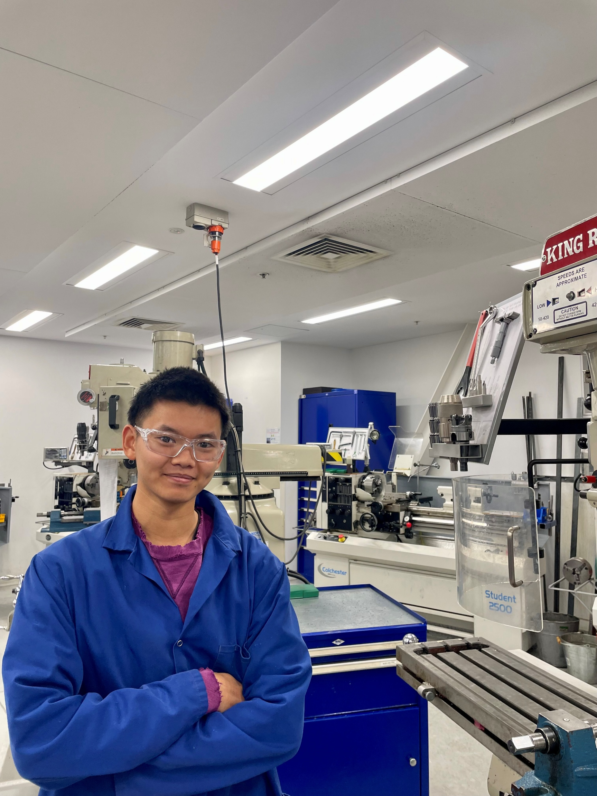

Penultimate-year Mechatronics Engineering student, University of Canterbury, BE Hons 2027.
Jeffery Liu
Specialising in mechanical design, with hands-on electrical and controls experience.
Completed an R&D internship at Holmes Solutions: researched how D/d ratio affects mooring rope strength; designed a retrofit bollard sleeve upgrade rated for loads above 50 tonnes, since delivered and passed full-scale testing; and co-authored the resulting technical paper, presented at an international marine conference. Vehicle systems are the thread running through most of what I do outside uni: founded and ran a licensed vehicle dealership (35+ cars bought and sold) for 3+ years out of my own workshop, built a performance engine in my garage, taught public bike-maintenance workshops when I was younger, and now work with a tuner on performance consultation. I'm also a junior member of UC Motorsport's vehicle dynamics team.
